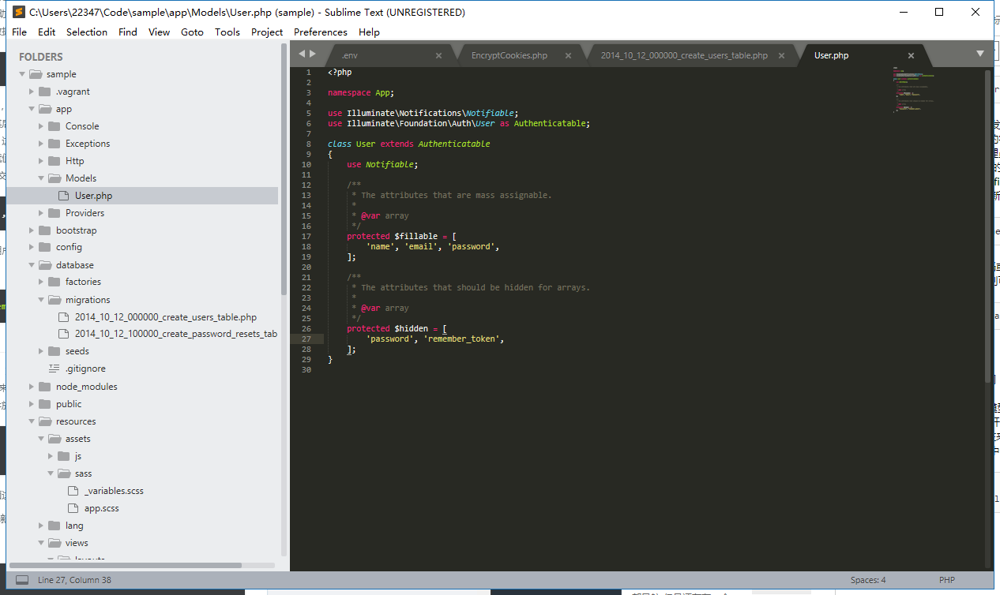

用户模型
Laravel 默认为我们生成了用户模型文件
app/User.php
<?php
namespace App;
use Illuminate\Notifications\Notifiable;
use Illuminate\Foundation\Auth\User as Authenticatable;
class User extends Authenticatable
{
use Notifiable;
/**
* The attributes that are mass assignable.
*
* @var array
*/
protected $fillable = [
'name', 'email', 'password',
];
/**
* The attributes that should be hidden for arrays.
*
* @var array
*/
protected $hidden = [
'password', 'remember_token',
];
}
其中 Notifiable 是消息通知相关功能引用, Authenticatable 是授权相关功能的引用. 接下来我们主要将精力放在 table fillable 和 hidden 上面,
我们前面提到过, Eloquent 模型可以让我们方便地与数据库进行交互, 因此我们需要在 ELoquent 模型中借助对 table 属性的定义, 来指明要进行数据库交互的数据库表名称, 在用户模型中, 我们对要交互的数据库表 users ,因此定义的代码如下:
protected $table = 'users';
在使用 Laravel 进行项目开发的时候, 我们需要考虑到, 当一些不怀好意的用户将类似 is_admin 这样的字段也嵌入到表单中进行提交, 会产生什么样子的后果? 或许就能获得管理员权限, 这就是我们常说的 批量赋值 的错误, 后面将会演示 批量赋值 的报错, 为了提高应用的安全性, Laravel 在用户模型中默认为我们添加了 fillable 在过滤用户提交的字段, 只有包含在该属性中的字段才能被正常更新:
protected $fillable = ['name', 'email', 'password'];
最后, 当我们需要对用户密码或者其他敏感数据在用户实例通过数组或 JSON 显示时进行隐藏, 则可以使用 hidden 属性
protected $hidden = ['password', 'remember_token'];
使用 App\Models 命名空间
Laravel 为我们默认创建的模型文件是放在 app 文件夹下面, 为了让新手能够更好的理解 MVC 模式的开发流程, 我们统一使用 app/Models 文件夹来放置所有的模型文件, 现在来让我们新建一个 app/Models 文件夹, 并将 User.php 文件放置在其中.
$ mkdir app/Models
$ mv app/User.php/Models/User.php

执行完这一操作后, 我们还需要执行下面这两个操作
1.修改 User.php 文件, 更改 namespace 为我们新创建的文件夹路径
<?php namespace App\Models;
2.编辑全局搜索 App\User 替换为 App\Models\User
在sublime shift ctrl f 进行全局搜索 然后进行 replace 操作
因为上面的文件改动相对较大, 我们进行一次 git 提交
$ git add -A
$ git commit -m "Move user model to model folder"
Action 模型的例子
模型文件可以通过多种方式进行创建, 下面让我们以文章模型 (Article) 为例, 为你讲解模型文件的创建,.
一般情况下, 如果我们手动创建一个模型文件, 最简单的方式是通过 make:model 来创建, 需要注意的一点是, 模型类名称使用单数形式来命名:
$ php artisan make:model Article

指定命名控空间
这种创建方式的模型默认是放在 app 文件夹下, 我们因遵循 MVC 最佳时间而需要把模型文件放在 app/Models 文件夹下面. 首先我们删除错误文件, 然后为创建模型命令指定命名空间
$ rm app/Article.php
$ php artisan make:model Models/Article
同时创建迁移文件
如果需要在创建文件夹的时候顺便创建数据库迁移, 则可以使用 --migration 或 -m 选项, 让我们将刚才生成的模型进行删除, 尝试生成迁移文件:
$ rm app/Models/Article.php
$ php artisan make:model Models/Article -m

可见模型文件和迁移文件一并生成了
Eloquent 数据模型
正常情况下, 一个最小代码的 ELoquent 模型如下所示
<?php
namespace App\Models;
use Illuminate\Database\Eloquent\Model;
class Article extends Model
{
//
}
Eloquent 表命名约定
在该文件中, Eloquent Article 模型默认情况下会使用类的 下划线命名法 和 复数形式命名法 来作为数据表的名称命名规则,
- Article 数据模型对应 articles 表
- User 数据模型对应 users 表
- BlogPost 数据模型对用 blog_posts 表
因此 Eloquent 将会假设 Article 模型会被存储记录在 articles 数据表中, 如果你需要指定自己的数据库, 则可以通过 table 属性来定义, 如:
<?php
namespace App\Models;
use Illuminate\Database\Eloquent\Model;
class Article extends Model
{
protected $table = 'my_articles';
}
约定优于配置 解释
约定优于配置 (convention over configuration), 也称作为约定编程, 这是一种软件设计范式, 旨在减少开发人员决定的数量, 获得简单的好处, 又不失灵活性, 如果所用工具的约定与你的期待响度==相符, 便可省去配置, 反之, 你可以通过配置来达到你所期待的方式.
Eloquent 数据表命名约定机制即属于 约定优于配置 , 数据模型类 Article 按照系统约定对应于 articles 数据表, 如果我们因为特殊原因需要使用其他的表名称, 只需要通过配置 $table 即可达到预期.
收拾代码
由于刚才的代码仅仅用于演示, 所以我们需要将他们通过 git 命令移除
$ git add -A
$ git checkout -f
移除成功!